Animales Legendarios
En Red Dead Redemption 2, los animales legendarios son criaturas únicas y poderosas que se encuentran en áreas específicas del mapa.
Cazarlos puede ser un reto, ya que tienen patrones de comportamiento especiales y requieren estrategias cuidadosas.
una guía de algunos de estos animales:

I... Prepara tu equipo:
Usa tónicos: Antes de la caza, asegúrate de llevar tónicos de salud, resistencia y Dead Eye.
Lleva cebo si es necesario: Para algunos animales, el cebo de depredador o herbívoro puede ayudar a atraerlos.
II... Rastrear a los animales legendarios:
Al llegar a la zona de un animal legendario (marcada en el mapa con un ícono especial), debes
activar tu modo Dead Eye o Eagle Eye para rastrear pistas.
Busca huellas, excrementos o restos de comida para seguir el rastro. Cada pista te llevará más
cerca del animal.
III... Animales Legendarios
| 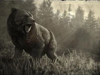 | 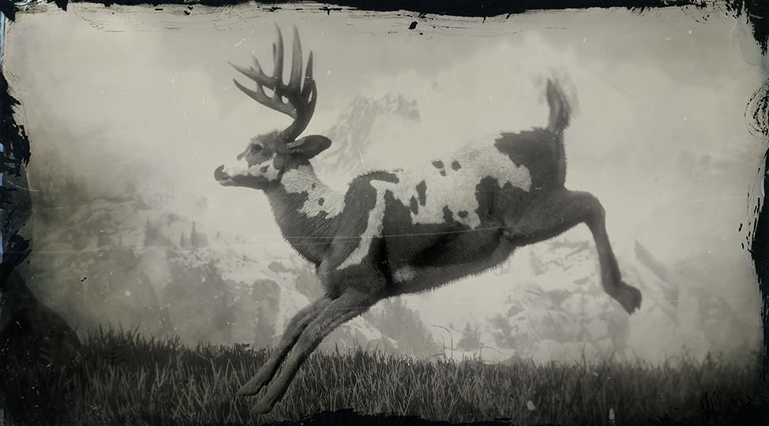 |  |
 |
Oso Grizzly Legendario Ubicación:O'Creagh's Run |
Ciervo Legendario Ubicacion:Noroeste Strawberry |
Bisonte Tatanka Legendario Ubicacion:Hennigan's Stead |
Bisonte Blanco Legendario Ubicacion:Lake Isabella |
| 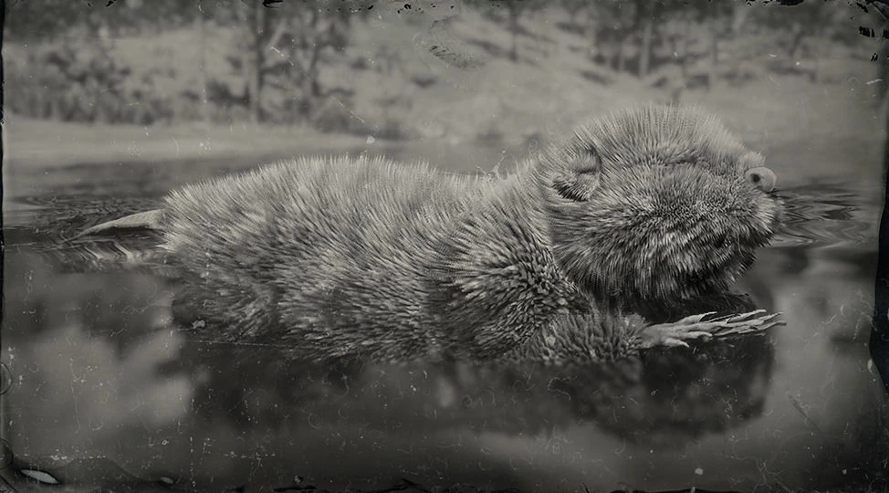 | 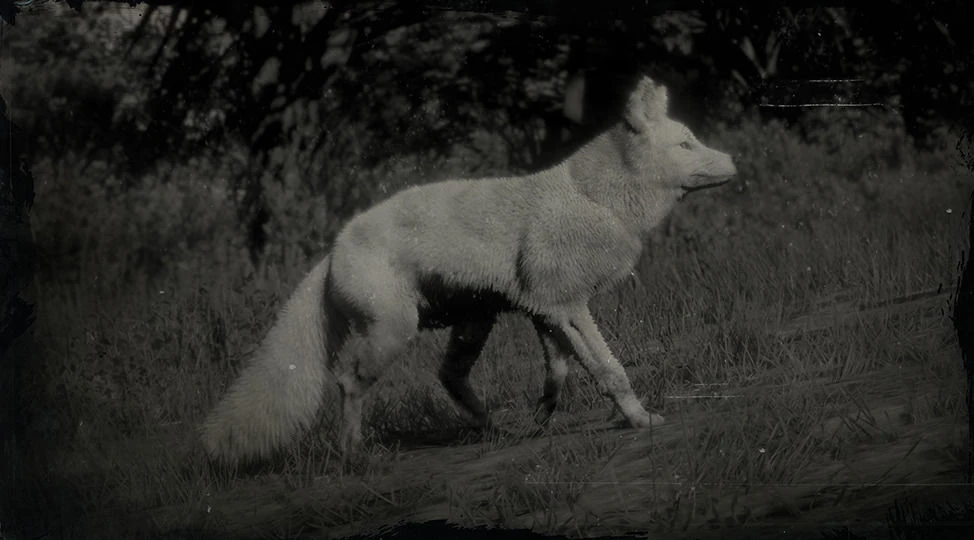 | 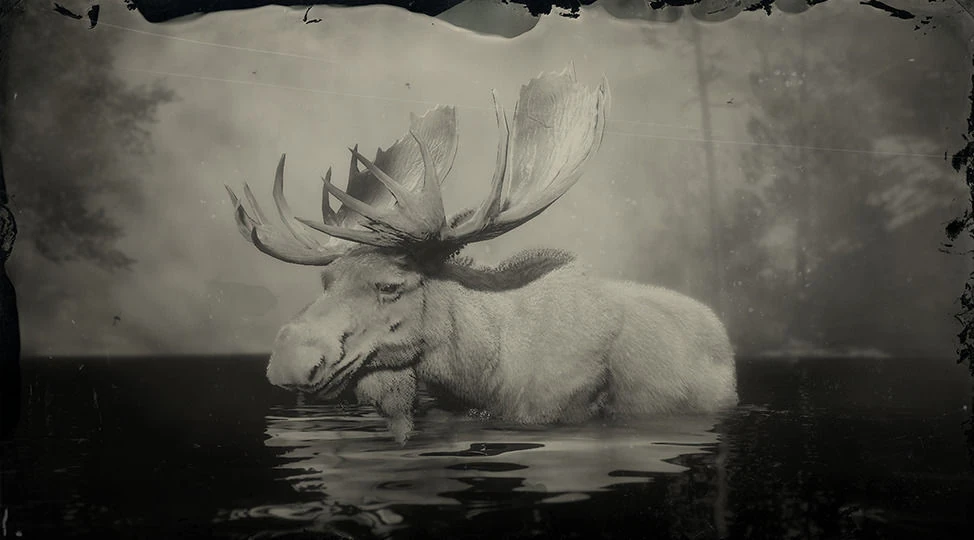 | 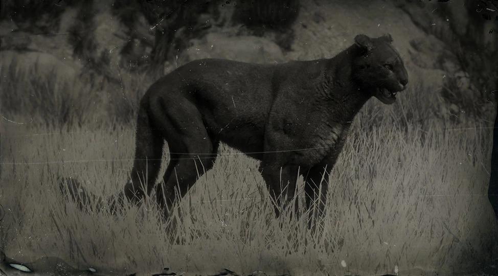 |
Castor Legendario Ubicación: Al norte del lago Owanjila |
Zorro Plateado Legendario Ubicación: En Mattock |
Alce Legendario Ubicación:Al norte de Annesburg |
Puma Legendario Ubicación:Gaptooth Ridge |
| 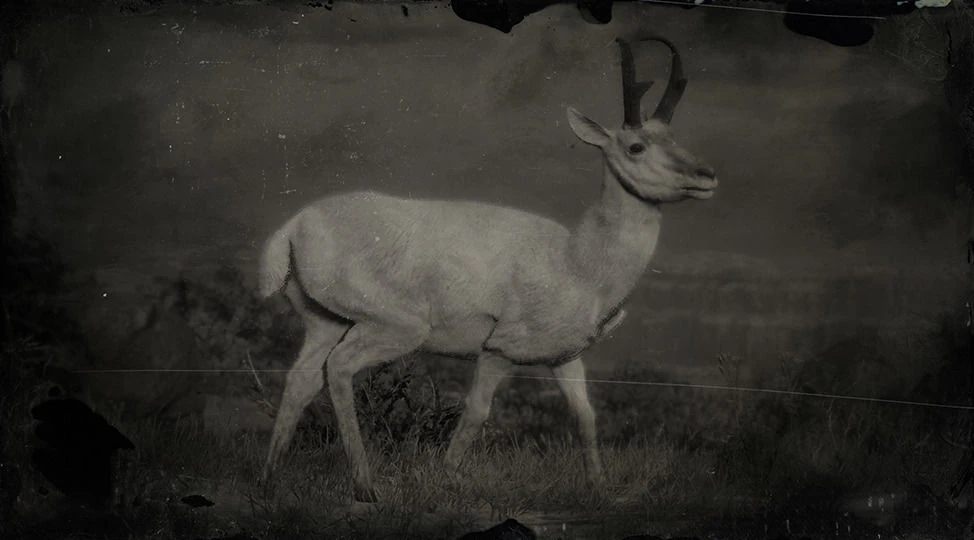 | 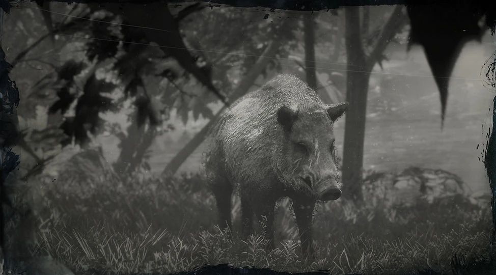 | 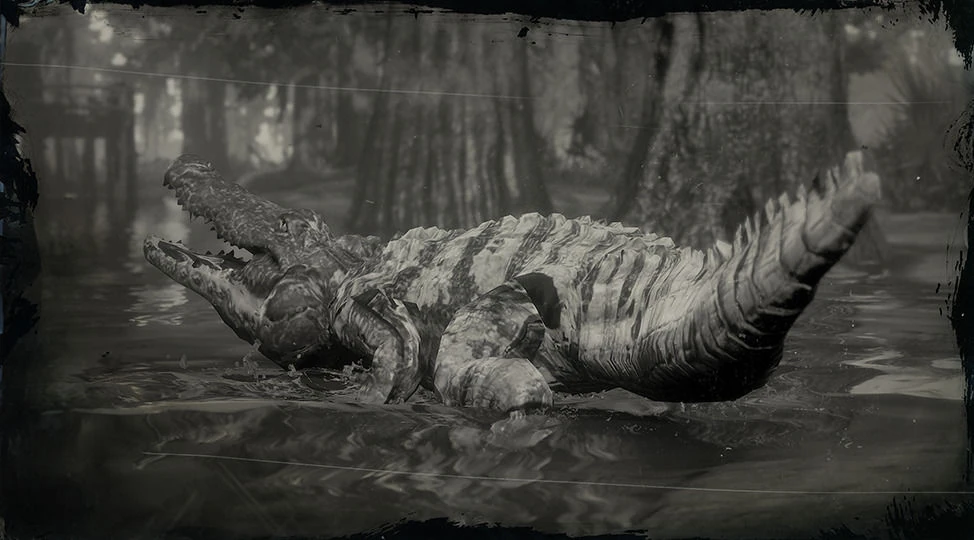 | 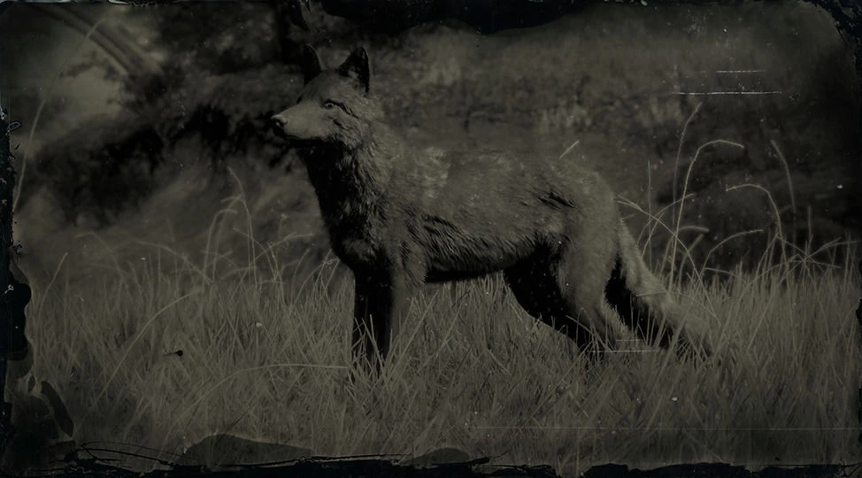 |
Berrendo Legendario Ubicación:O'Creagh's Run |
Jabalí Legendario Ubicacion:Bluewat |
Caiman Legendario Ubicacion:Bayou Nwa |
Coyote legendario Ubicacion: Heartlands (New Hanover) |
| 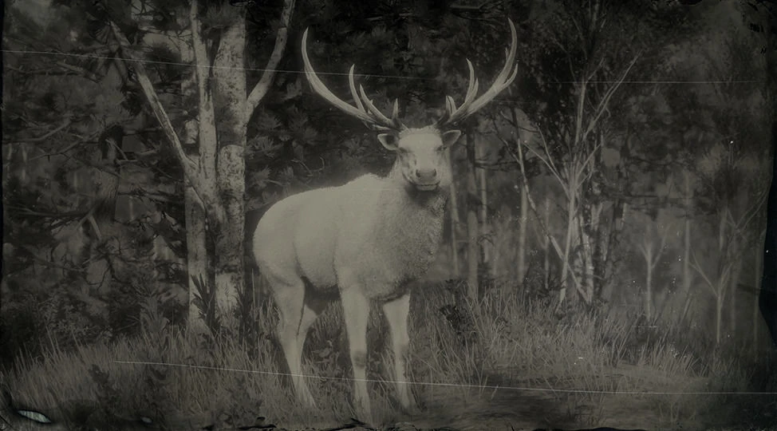 | 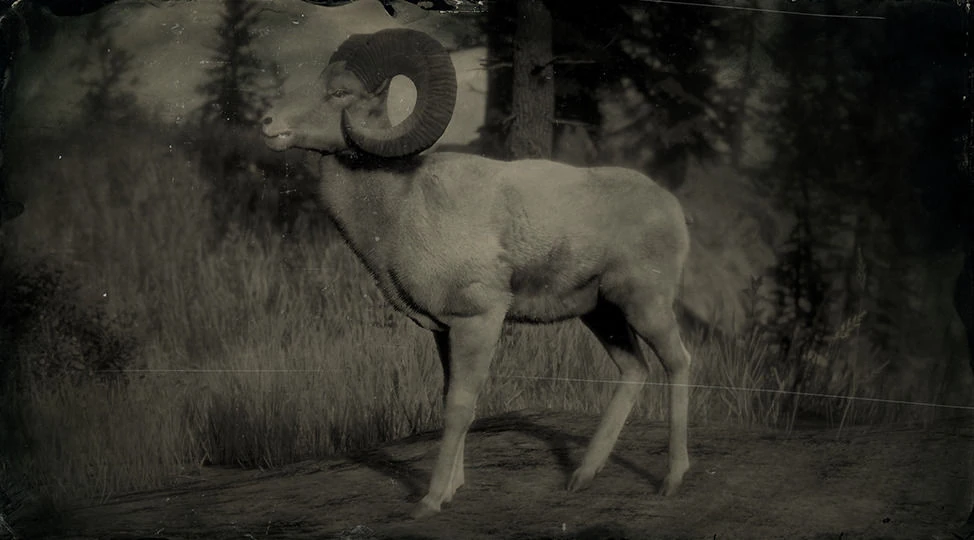 | 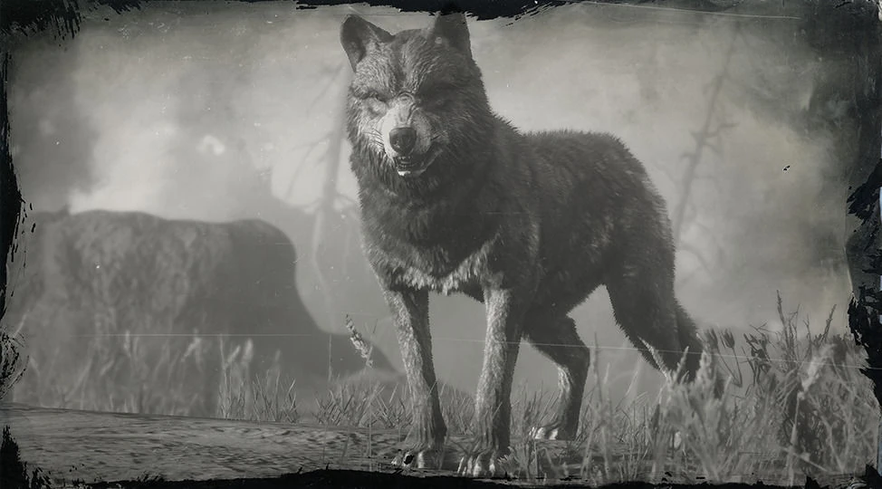 | 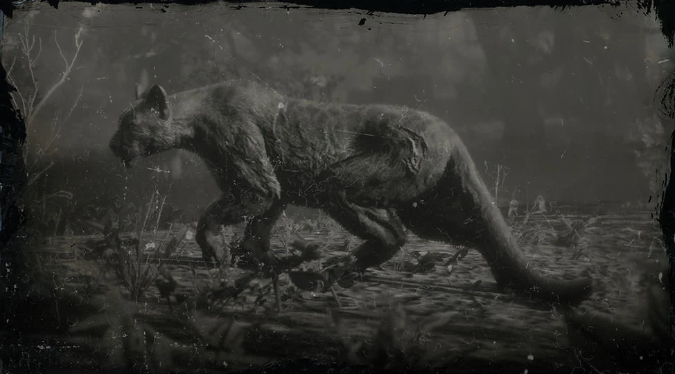 |
Uapití Legendario Ubicación: Cumberland Forest |
Carnero legendario Ubicacion:Grizzlies West |
Lobo legendario Ubicacion:cotorra springs |
Pantera legendaria Ubicacion: Scarlett Meadows/p> |